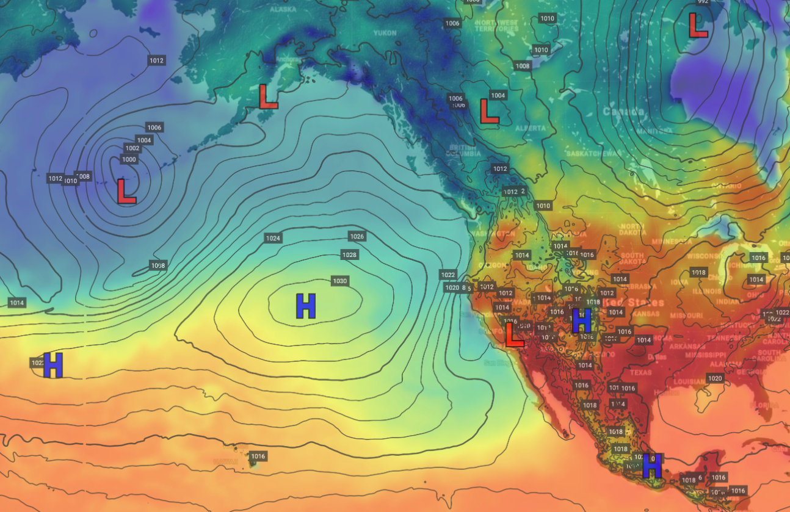

Mountains and High Altitudes
1. Mount Everest (8,848 meters)
Pressure: ~0.33 atmospheres (33,000 Pa)
At Everest's summit, the pressure is about one-third of sea level, making it extremely challenging for climbers due to the low oxygen levels.
2. Denver, Colorado (1,609 meters)
Pressure: ~0.83 atmospheres (83,000 Pa)
Known as the "Mile-High City," Denver’s altitude leads to lower pressure and potential altitude sickness for those unacclimated.
3. Mount Kilimanjaro (5,895 meters)
Pressure: ~0.5 atmospheres (50,000 Pa)
The summit of Mount Kilimanjaro experiences a significant drop in pressure, roughly half that of sea level. Climbers face challenges related to oxygen availability.
4. Kármán Line (100 kilometers)
Pressure: 0.000001 atmospheres (0.1 Pa)
This is the recognized boundary of space, where air pressure is nearly negligible, and traditional flight is impossible.
Atmospheric Layers and Important Altitudes
1. Troposphere (0-12 kilometers)
Pressure: 1 to 0.3 atmospheres (101,325 to 30,000 Pa)
The troposphere is where we live, and weather occurs. Pressure decreases with altitude, making the air thinner as you ascend.
2. Stratosphere (~20 kilometers)
Pressure: ~0.05 atmospheres (5,000 Pa)
This layer houses the ozone layer and sees a significant drop in temperature and pressure.
3. Mesosphere (~50 kilometers)
Pressure: ~0.001 atmospheres (100 Pa)
In this layer, pressure is very low, and it is where most meteors burn up upon entering the atmosphere.
4. Thermosphere (~85 kilometers)
Pressure: 0.00001 atmospheres (1 Pa)
This layer contains very thin air; it is where the International Space Station orbits and temperatures can rise significantly.
Ocean Depths
1. Titanic Wreck (3,800 meters)
Pressure: ~380 atmospheres (38,500,000 Pa)
The Titanic lies at this depth, where pressure is extremely high, making exploration difficult.
2. Deep Ocean (4,000 meters)
Pressure: ~400 atmospheres (40,000,000 Pa)
This environment hosts unique life forms adapted to high pressure and darkness.
3. Abyssal Zone (6,000 meters)
Pressure: ~600 atmospheres (60,000,000 Pa)
At these depths, organisms have adapted to survive in total darkness under extreme pressure.
4. Mariana Trench (11,000 meters)
Pressure: ~1,100 atmospheres (110,000,000 Pa)
This is the deepest part of the ocean, experiencing the highest known pressure on Earth.

Everyday Pressure Levels
1. Car Tires
Pressure: 30 to 35 psi (pounds per square inch)
Most standard car tires require a pressure of around 30 to 35 psi to maintain optimal performance and fuel efficiency. Proper tire pressure ensures safety, improves handling, and enhances tire lifespan.
2. Sports Balls (Soccer, Basketball)
Pressure: 8 to 12 psi for soccer balls; 7.5 to 8.5 psi for basketballs
Sports balls are inflated to specific pressures to ensure optimal performance and handling. Soccer balls typically require 8 to 12 psi, while basketballs are usually inflated to around 7.5 to 8.5 psi. Correct inflation helps in achieving the right bounce and control.
3. Atmospheric Pressure at Sea Level
Pressure: 14.7 psi (101,325 Pa)
Atmospheric pressure at sea level is approximately 14.7 psi. This is the baseline pressure against which many pressures are measured.
Variation of Pressure with Depth in a Fluid
The pressure in a fluid increases with depth due to the weight of the fluid above it. The relationship is given by the formula:
P = P₀ + ρgh
Where:
- P: Pressure at depth
- P₀: Atmospheric pressure at the surface
- ρ: Density of the fluid
- g: Acceleration due to gravity (9.81 m/s²)
- h: Depth below the surface
What Force Must a Dam Withstand?
The force exerted on a dam can be calculated using the average pressure on the dam’s surface and its area:
F = PA
Where:
- F: Force
- P: Average pressure on the dam
- A: Area of the dam
How Dense Is the Air?
The average density of air at sea level can be calculated using the ideal gas law:
ρ = P / (RT)
Where:
- ρ: Density
- P: Pressure (101325 Pa)
- R: Ideal gas constant (287 J/(kg·K))
- T: Temperature in Kelvin (approx. 288 K at sea level)
What Depth of Water Creates the Same Pressure as the Entire Atmosphere?
To find the depth (h) that produces atmospheric pressure (P₀), we rearrange the pressure formula:
h = P₀ / (ρg)
Using:
- P₀: 101325 Pa
- ρ: Density of water (approx. 1000 kg/m³)
- g: 9.81 m/s²
Pressure of Various Substances
The pressure exerted by various substances can differ significantly based on their state (solid, liquid, gas) and density. Here are a few examples:
- Water at 1 meter depth: 1000 Pa
- Air at sea level: 101325 Pa
- Oil (density approx. 850 kg/m³) at 1 meter depth: 850 Pa